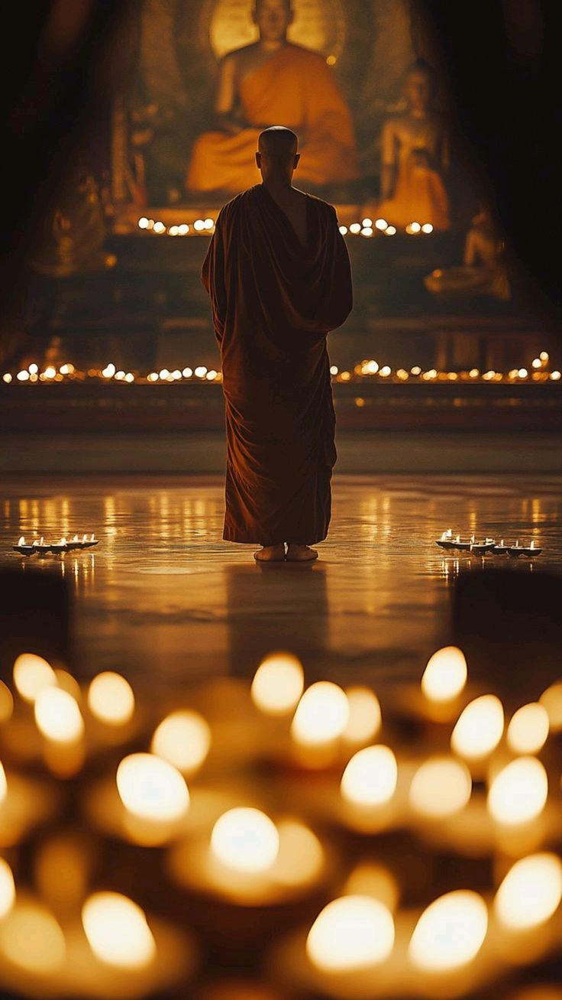
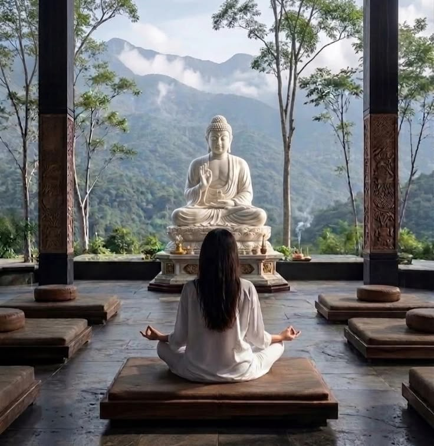
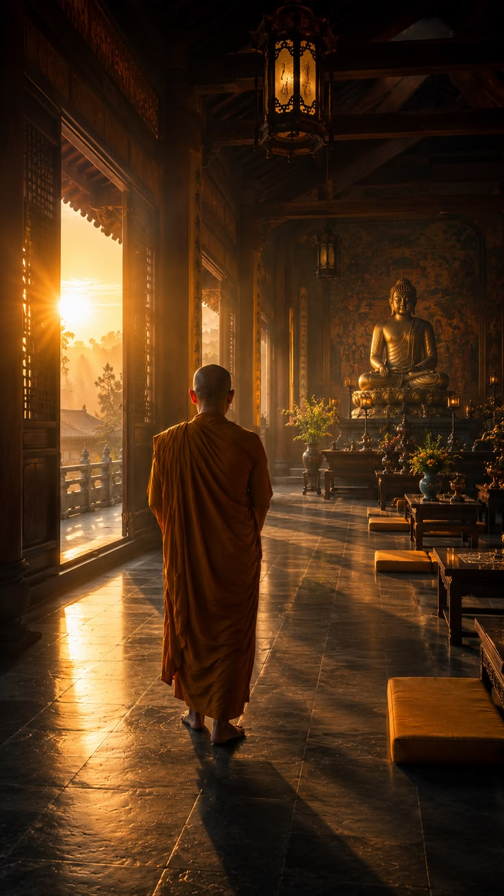

Most Booked · 5 Days
Deep Stillness Retreat
Five days of noble silence, full daily programming, and nightly teacher guidance — our most-booked retreat, and the one most guests describe as the turning point in their practice.

Your Retreat
The one guests come back for.
Five days is enough time for the mind to actually settle — past the restlessness of the first day, into something steadier. Phones are put away for the duration, meals are taken in silence, and the schedule holds a rhythm of sitting, walking, and rest from before sunrise until after dark.
Each evening, a resident teacher offers a dharma talk and answers questions from the group. A closing integration session on the final morning helps you carry the stillness back into ordinary life.



Day by Day
How the five days unfold
Arrival & orientation
Check in, settle into your private room, and join an orientation that explains the noble-silence schedule before a shared final meal with speaking allowed.
Entering silence
Noble silence begins at sunrise. Sitting and walking periods alternate through the day, with the first evening dharma talk after dinner.
Sustained practice
The core days of the retreat — longer sitting blocks, walking meditation through the tea terraces, and nightly guidance from the resident teacher.
Closing integration
Noble silence lifts after the final sitting. A closing circle helps translate the retreat into daily habits, followed by checkout by 11 AM.
Five Days of Noble Silence
What's Included
Everything you need, nothing you don't
Private room, full board
Your own quiet room and three vegetarian meals a day, taken in silence with the group.
Nightly dharma talks
A resident teacher offers guidance each evening and takes questions from the group.
Closing integration session
A guided conversation on your final morning to help the practice travel home with you.
Voices from the Hall
What five-day guests say
"Four days here reset something in me that years of apps never touched. The silence is the real teacher."
"I came for a weekend and stayed for the full retreat. The teachers meet you exactly where you are."
Good to Know
Frequently asked
No talking, reading, writing, or devices from the end of orientation until the closing circle on day five. You may still speak privately with a teacher if needed.
Yes, though if you've never sat before, we often recommend the Reset Weekend first so the silence and schedule feel less unfamiliar.
Of course — a teacher is always available to talk it through with you first, and departures can be arranged at any point.
This is our most-booked retreat, so 2–3 weeks ahead is a safe window, especially around weekends and holidays.
Spaces Are Limited
Hold a place before the next retreat fills.
Send us your preferred dates and we'll confirm availability within a day.
Check Availability